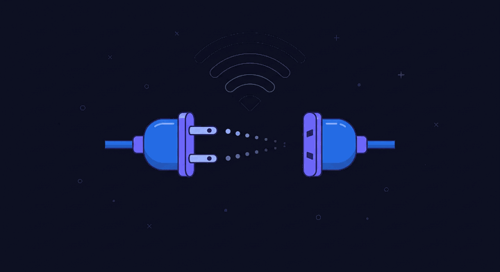

🔌 OFFLINE
You are offline
No internet connection right now. Previously visited pages still work — reconnect and everything comes back.

🔌 OFFLINE
No internet connection right now. Previously visited pages still work — reconnect and everything comes back.